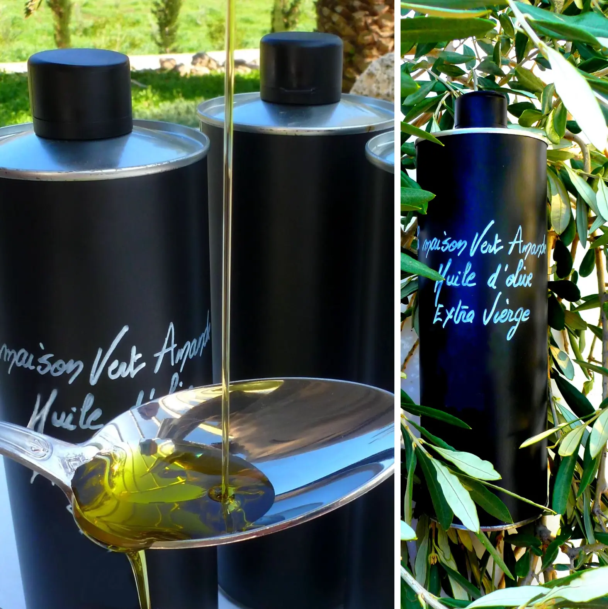
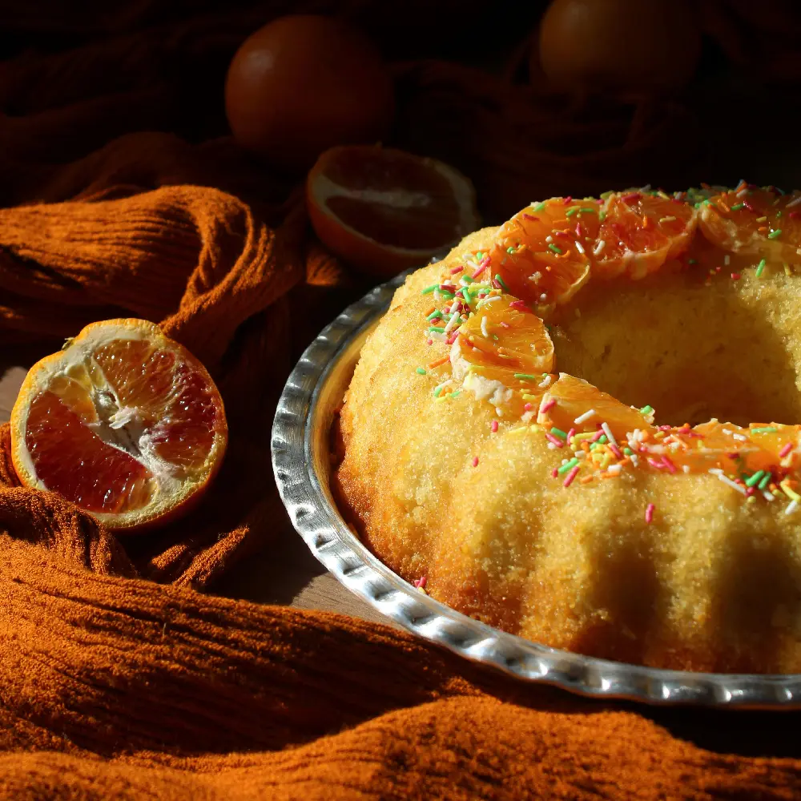

Two
Olive Oil
Originally from the Mediterranean, the olive tree probably appeared 60,000 years ago in its wild form. The word “oil”, which appeared in the early 12th century, comes from the Latin oleum — olive oil. The tree is an emblem of eternity, peace and strength.
The benefits of the golden liquid include omega 9 and phenolic compounds with antioxidant properties. In the kitchen it accentuates salads, brings character to mashed potatoes and baked lamb, and excites the palate with sheep milk yoghurt and honey.
From olive to olive oil. Our harvest runs from November to January. Three phases — grinding the non-pitted olives, pressing the pulp, settling to separate the oil from the vegetation water — mingle patience and know-how. It takes about 5 kilos of olives to produce 1 litre of oil.
Choosing a good oil. Look for “extra virgin”, meaning acidity below 1%. The higher the acidity, the lower the quality. Choose a vintage oil: proof it is not a combination of two years, nor a mixture of oils from different countries.
Storing it. Keep it cool (15–20°C) and away from light. That is why we chose an elegant aluminium bottle that protects it perfectly. Our olives come exclusively from the grove of our farm at Petrothalassa, and the oil is sold directly from producer to consumer, without any intermediary. Its flavour is sweet and creamy, with a hint of freshness.
Recipe
Olive Oil and Orange cake
- 7 cl olive oil
- 2 organic oranges
- 1 cup orange juice
- 5 g baking yeast
- 75 g ground almonds
- A pinch of saffron filaments
- 1/2 tsp salt
- 3 eggs
- 80 g flour
- 1 pinch of salt
- 150 g sugar
- 2 tbsp orange blossom water
- Optional: 3 drops sweet orange essential oil
Preheat the oven to 180°C. Mix the saffron with the olive oil. Zest the oranges, peel them raw, remove the seeds and purée them, then add the oil and saffron. Add the eggs one by one, then the sugar and orange blossom water. Combine the flour, yeast, ground almonds and salt in a bowl and blend into the mixture. Oil and flour a cake tin. Bake at 180°C for 30 minutes, then cover with foil, lower to 160°C and bake a further 30 minutes — a toothpick in the centre should come out dry.
